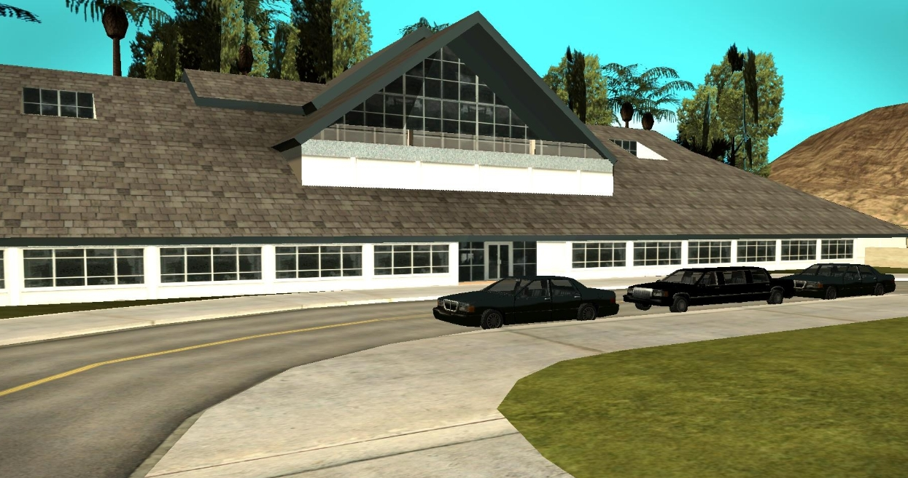
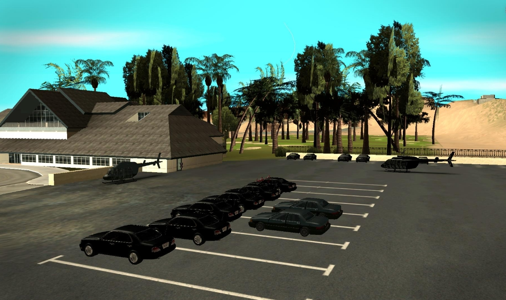
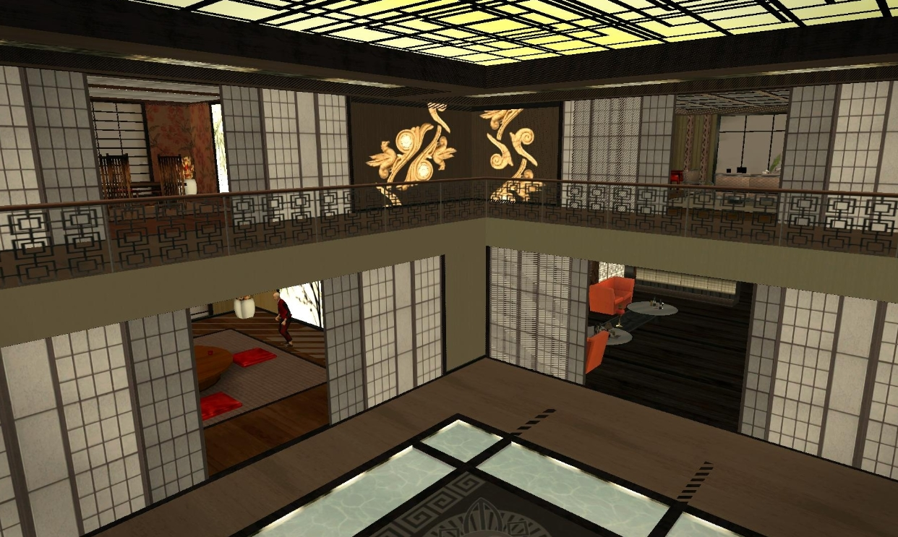
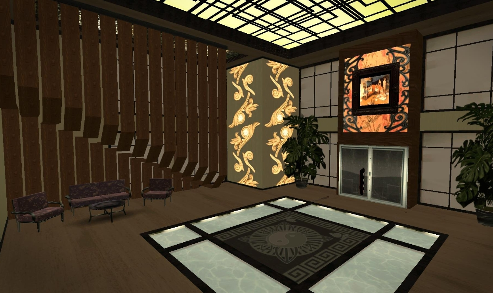
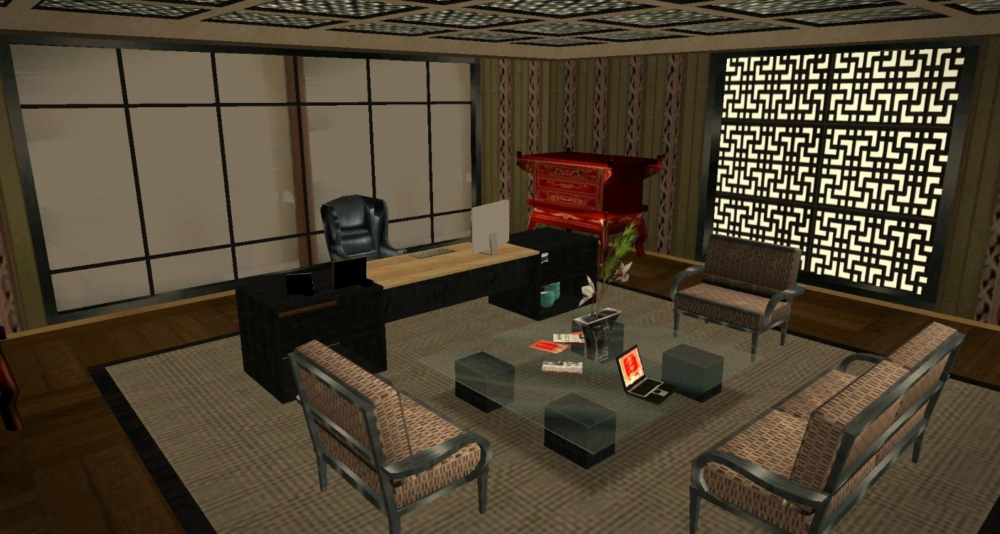
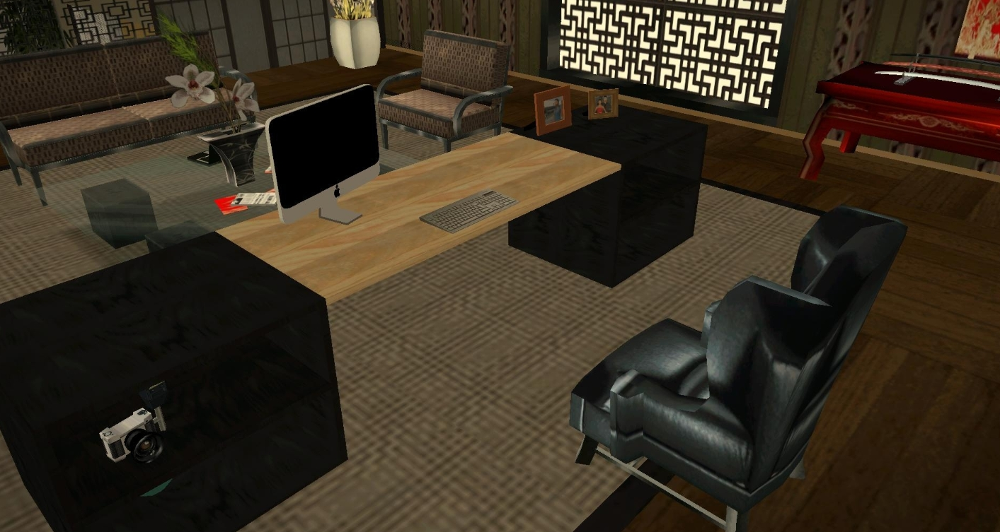
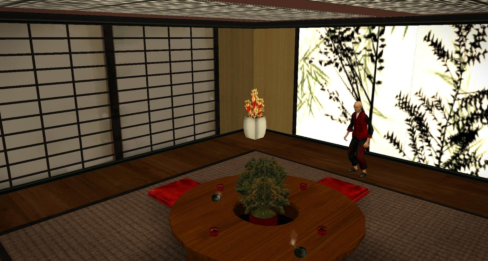
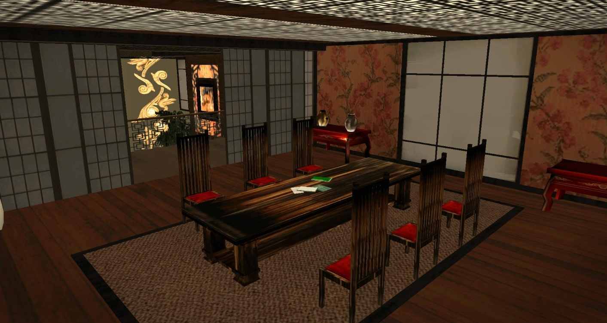
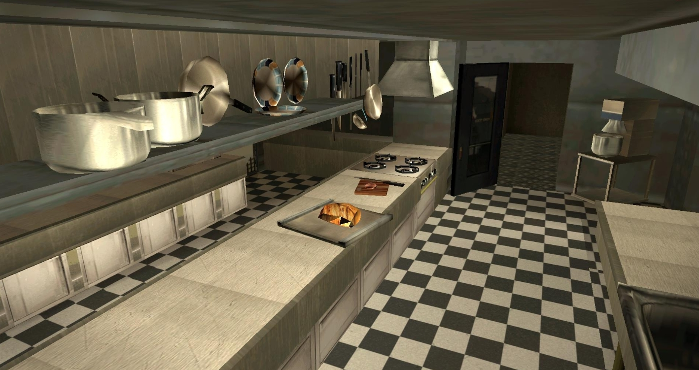
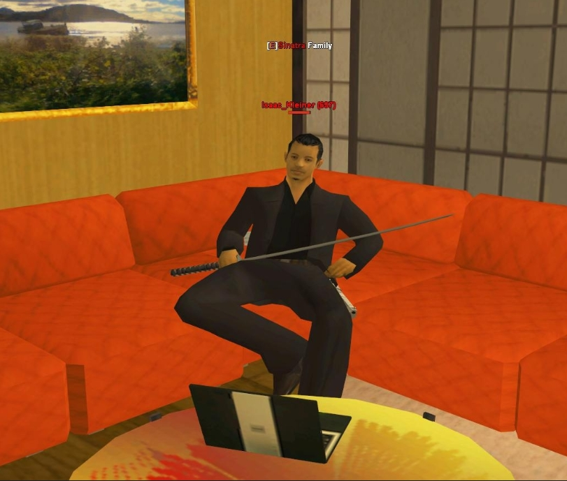

Приглашение пришло без предупреждения. Никаких звонков, никаких писем — только короткое сообщение от человека, чьё имя я слышал десятки раз, но никогда не видел в печати. «Сегодня. Вечер. Ресторан у набережной. Приходите один». Подпись — Isaac Kleiner. Кумитэ клана Якудза.
Я знал, кто он. Знает весь San-Fierro — по слухам, по намёкам, по историям, которые рассказывают шёпотом. Но увидеть его лично, сесть за один стол, услышать голос — это было совсем другое. Я взял диктофон, блокнот и поехал.
Ресторан
Он сидел у окна, спиной к залу. Чёрный костюм, спокойное лицо, руки на столе — ладонями вниз, как человек, которому нечего скрывать и нечего демонстрировать. Мы говорили около часа. О традициях. О кодексе. О том, как клан живёт в современном городе. Он отвечал ровно, без пауз, без уклонений — так, будто давно решил, что именно можно сказать вслух.
А потом он отодвинул чашку, посмотрел на меня и произнёс фразу, которую я не ожидал услышать: «Поедем ко мне. Посмотрите, где мы живём».
Я не стал переспрашивать. Встал, оставил на столе деньги за свой кофе — он, разумеется, не позволил заплатить за себя — и вышел следом. У подъезда уже стоял чёрный лимузин. Водитель открыл заднюю дверь молча.
Дорога
Двадцать минут молчания. Kleiner смотрел в телефон, я — в окно, пытаясь запомнить маршрут. Инстинкт журналиста: зафиксировать путь, чтобы потом восстановить. Но маршрут был построен так, чтобы его невозможно было запомнить. Промышленные кварталы, съезд с шоссе, грунтовая дорога между холмами. Никаких знаков. Никаких ориентиров.
Ворота открылись сами. Высокие, тёмные, они просто разошлись в стороны, пропуская машину внутрь. За ними — территория, которую не видно с дороги. Пальмы, стена, тишина. Я вышел и впервые за вечер почувствовал, что воздух здесь другой. Плотнее. Тише.


Дом выглядел спокойным. Большая покатая крыша, панорамные окна первого этажа, центральная часть с треугольным фронтоном. Никаких колонн, никаких львов у входа, никаких намёков на богатство. Только уверенность — такая, которую не нужно демонстрировать.
Парковка поразила больше, чем сам дом. Десятки машин — все чёрные, все одной марки, все под одним углом. Два вертолёта на площадках. Ни одного случайного предмета, ни одного лишнего движения. Порядок здесь не наводится — он здесь живёт.
Внутри
Двери открылись без звука. Не скрипнули, не щёлкнули — просто разошлись. И всё, что я видел снаружи, оказалось лишь оболочкой. Настоящий дом начинался здесь.
Двухуровневый атриум вздымался надо мной. Балкон второго этажа нависал над пространством, японские перегородки сёдзи делили его на зоны, не разрушая целостности. Тёмное дерево пола, приглушённый свет сверху — всё дышало спокойствием силы.

С балкона открывался вид на весь первый уровень. Слева — традиционная комната с татами и низкими столиками, справа — гостиная с оранжевыми креслами. Древняя Япония и современный San-Fierro существовали здесь одновременно, не конфликтуя.

Главный зал поразил больше всего. В центре пола — инь-ян, будто вписанный в сам фундамент. Вокруг — световые панели, создающие эффект парящего пространства. Массивная колонна с орнаментом, картина в тяжёлой раме, живые растения. Здесь не принимают гостей. Здесь принимают решения.
Кабинет
На втором этаже — кабинет Kleiner. Просторная комната, где деловая зона плавно переходит в переговорную. Чёрный стол с iMac, кожаное кресло, красный алтарь в углу. Декоративная решётка на стене отбрасывает на пол узор, который меняется вместе с солнцем.


На полке рядом со столом — старая плёночная камера. Рамки с фотографиями. Ноутбук. Личные вещи среди строгой обстановки. Этот человек не прячет жизнь за фасадом власти — он просто не показывает её тем, кому не нужно видеть.
Комнаты
Татами-комната — сердце дома. Круглый деревянный стол с бонсаи в центре, красные подушки для сидения, стена с изображением бамбука. Здесь нет стульев, нет высоких столов, нет ничего, что возвышает одного над другим. Все равны перед этим столом — и хозяин, и гость.


Обеденная комната — длинный тёмный стол, высокие стулья с красными сиденьями, вид на атриум через раздвижные перегородки. Здесь собираются все. Здесь едят, говорят, молчат. Стены покрыты обоями с цветочным узором — неожиданно нежно для дома, который ассоциируется с силой.
Кухня
Профессиональная кухня на нижнем уровне. Чёрно-белая плитка, стальное оборудование, кастрюли и сковороды, подвешенные над рабочими поверхностями. Здесь готовят для всего клана — не для одного человека, не для гостей, а для семьи. Повар, которого я мельком увидел, работал молча, как и все в этом доме.

Здесь каждый камень помнит тех, кто был до нас, и каждый угол хранит верность, которую мы не нарушим.— Isaac Kleiner
Хозяин
Мы вернулись в гостиную. Kleiner сидел на большом оранжевом диване — том самом, что я видел, входя в дом. В руках он держал катану. Не демонстрировал, не размахивал — просто держал, как человек держит телефон или чашку. Это была часть его, продолжение руки.

Рядом на столике — открытый ноутбук. Дела не ждут, даже когда ты показываешь журналисту свой дом. Он говорил мало, но каждое слово было взвешенным. О кодексе. О семье. О том, что традиции — это не музейный экспонат, а способ жить сегодня.
Я провёл в этом доме четыре часа. Увидел больше, чем рассчитывал. Услышал больше, чем надеялся. Покидая особняк, я обернулся у ворот — здание стояло тихое, почти незаметное среди пальм. Но теперь я знал: за этими стенами живёт целый мир.